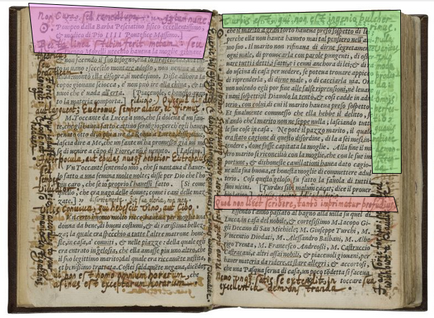

Teaching with Online Annotation Tools
Part 2 of the Spring 2016 Humanities Day Workshop, Exploring the Digital Humanities for Teachers of English
- Instructor:
- Elisa E. Beshero-Bondar, Director of the Center for the Digital Text and Associate Professor of English at the University of Pittsburgh at Greensburg
- Course Materials and Projects
- When and Where:
- 7 May 2016 from 11am to 12:30pm
- The University of Pittsburgh at Greensburg, Cassell Hall 205
Sixteenth-century English writer Gabriel Harvey’s annotations on a copy of Lodovico Domenichi’s Facetie at the Folger Institute. Click on the picture to read a modern-day editor’s annotations of Harvey’s Renaissance annotations. Source: collation.folger.edu.
Introduction to annotations, paratexts, and their target audiences
- Paratext (Gerard Genette): text that steps in to mediate between a book and its readers: the writing on the cover, the preface, the postcript, the footnotes, the endnotes
- Discourse communities (Stanley Fish, "Is there a Text in this Class?"): on the making of texts by communities in the act of reading
- Annotations: readers’ marks on the pages. Purposes and functions?
- ink and paper
- digital (offline)
- web (online)
- proprietary vs. open annotation. Lit Genius and hypothes.is
- Reading as a Social Act
- Annotations piling on: a community gathering around a text:
Activity: Set up an Hypothesis Account
Activity: Annotate a Literary Text on the Web
Read Annotation Tips for Students.
Choose a text to annotate from among the following sites:
Go to the Hypothesis site and paste the link to your site in the Hypothesis page to begin annotating, or install the Google Chrome Hypothesis plug-in so you can annotate directly on the site.
For this annotation exercise, we will work on preparing explanatory notes. Look for at least three opportunities to identify and explain unfamiliar words, concepts, or proper names. Look up information to help identify the proper name, locate something on a map, or provide an interesting illustration.
Draft annotations by highlighting a short passage (ideally just a word or a few words). Annotations tend to be most helpful when they are anchored to very specific points in a text to explain. Your annotations shouldn’t just give an opinion on how to read the passage, but should provide some specific information that helps us to visualize or understand the passage better. Include links and images in at least one of your annotations.
Add a tag to your annotations to help identify our workshop as a group. Use the tag #UPGHumDay.
When you are finished with your annotations, look for annotations written by another of us in the room, and add a comment to their annotations, to start a conversation about the text, ask a question, add information, link outward, participate in a collective effort.
Activity: Review and Reflect on Annotation Writing
- What did you discover about the reading and writing process in the act of annotating?
- How might annotation be useful to train the reading eye?
- Can annotations improve students reading and writing precision?
- What kinds of research activities can be facilitated through annotation?
- Should annotation be used as a kind of online class discussion? Or what range of uses can you identify for this kind of writing?
- How can you control the publicity of annotations? (See the Education page on
Creating a Private Group
.) Should annotations be shared only within a class, or should they be available to wider communities beyond your classroom? Should they be fully public?
- What issues or potential problems do you find with online annotation?
Sample Annotation Assignments (with objectives)
Resources
Hypothesis
Lit Genius and Education Genius